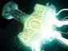
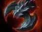

Sprout
Создаёт кольцо деревьев вокруг цели. Может блокировать путь врагу или помочь союзникам поймать его. Помни, что некоторые способности и предметы позволяют выбраться из деревьев.

Универсальный герой — позиции: 1, 2, 3, 4
глобальное давление, фарм, помощь на линиях и разрушение строений
перемещаться по карте, быстро появляться рядом с союзниками, толкать линии и заставлять врагов отвлекаться на защиту башен
используй телепортацию для перехода между линиями и лагерями. Старайся фармить безопасно и не телепортироваться туда, где тебя легко окружат
Создаёт кольцо деревьев вокруг цели. Может блокировать путь врагу или помочь союзникам поймать его. Помни, что некоторые способности и предметы позволяют выбраться из деревьев.
Позволяет телепортироваться в выбранное место на карте. Используй для помощи союзникам, защиты строений и давления на свободную линию.
Превращает деревья в управляемых энтов, которые помогают фармить и атаковать башни.

Выпускает глобальную цепную атаку по врагам на карте. Может наносить урон героям и помогать в фарме. Лучше применять, когда можно задеть несколько целей или помочь союзникам добить врага.





